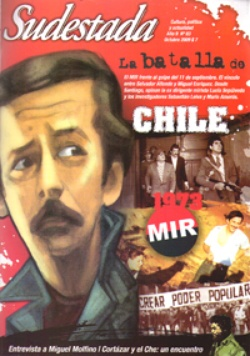

Buscar
Miguel Angel Molfino para principiantes
Narrador, cuentista, periodista, el chaqueño (por adopción) Miguel Molfino es un multifacético escritor con una historia para contar. De un pasado marcado por la militancia y un sueño de revolución, a un universo literario que integra a Faulkner y a Onetti. De una pasión revelada en la cárcel a una familia disgregada por la Dictadura. Un relato en primera persona y donde sobran las preguntas, un Molfino auténtico.
Edición N° 83
Octubre 2009
Revista bimensual
Comprar edición impresaSumario
- MIR: La batalla de Chile
- Ley de medios: una Ley, muchas preguntas
- Sergio Poli, violín y otras cuestiones
- Miguel Angel Molfino para principiantes
- Julio Cortázar-Che Guevara: Juego cruzado
- Enrique Oltuski: Hombre del llano
Compartir Articulo
Yo tuve una novia inolvidable que se llamó Revolución, ahora vivo en concubinato con una gran mujer que se llama literatura. En realidad, la literatura es previa a la revolución, por el hecho de haber nacido en una familia en la cual mi viejo era poeta, más bien lo que se dice un intelectual. Un tipo muy a la par, muy de su época. Solía reunirse con sus amigos en el mítico café Sorocabana de Resistencia. Eran todos intelectuales, más que nada diletantes del pensamiento. Una raza que ya se ha extinguido en el Chaco. Tipos de clase media acomodada que por lo general no trabajaban. Recuerdo que uno de ellos se llamaba Armando Anello, y solía contar una anécdota que se hizo muy popular: "Yo trabajé una sola vez en mi vida, y ese día falté".
A veces acompañaba a papá al Sorocabana y escuchaba hablar sobre Sartre, sobre existencialismo. Se citaba cada tanto un libro llamado ¿Qué es la literatura?, título que a mí me parecía muy obvio, porque me hacía acordar a otro libro titulado Mecánica popular, hágalo usted mismo, en el que te explicaban cosas elementales. Entonces me parecía raro, porque yo suponía que esa gente grande ya sabía o debería saber qué era la literatura. Pero bueno, evidentemente se trataba de la ingenuidad de un chico. En fin, acompañando a mi padre al café y rodeándome de la influencia de sus amigos, sobre todo de Armando (que fue algo así como el suplente de mi viejo, por lo menos el suplente intelectual), es que llegué a leer ¿Qué es la literatura? En el libro encontré una frase que me impresionó, decía algo así: "con el pretexto de la estética, no se puede dejar de lado la ética". Ese libro me marcó mucho.
Pero de chico la literatura fue mi principal entretenimiento, seguida por el cine. Había veces en que a la hora de la siesta se podía estar jugando un partidito de fútbol en la vereda y yo prefería quedarme leyendo: una buena manera de decir cuánto me gustaba la literatura. Leía por supuesto lo que leían los chicos de época: Salgari y toda la saga de Sandokán y los Tigres de Mompracem... Aventuras en la medida de lo posible. Stevenson, una versión reducida de Moby Dick. También leía mucha historia, sobre todo la que estuviera relacionada con el viaje. En cuanto a escribir, yo veía escribir a mi viejo y me parecía una cosa bastante inalcanzable. Su figura me producía una enorme sombra. Entonces escribía a escondidas de él, sin animarme a mostrar nada. Eran poemas, evidentemente.
Cuando tuve trece años, mi viejo enferma gravemente. No sé por qué cosa fantasiosa o mágica, se me aparece la idea de que si escribía una novela mi viejo no iba a morir. Es decir, mi idea era que mientras escribiera una novela mi viejo se mantendría con vida. Entonces empecé en un cuadernito una novela que se llamaba Egemón, la historia *de un guerrero que peleaba en la batalla del paso de las Termópilas. Mientras yo extendiera, digamos, esa narración, mágicamente, insisto, mi viejo no iba a morir. Pero, por supuesto, un día mí viejo muere; la enfermedad había sido más fuerte que la literatura, evidentemente. Fue una gran decepción para mí..., me refiero a esta cosa tan impotente que es escribir...
La nota completa en la edición gráfica de Sudestada Nº83 - octubre 2009
Comentarios
entrevista: Pablo Black
Articulos más vistos


LIBRERÍA SUDESTADA

Colección infantil

Distribuidora de Libros

Suscripción

Sudestada en URUGUAY

Otros articulos de esta edición
 Dossier
Dossier
Julio Cortázar-Che Guevara: Juego cruzado
Esta es una historia de cruces y paradojas. Los protagonistas son, a la vez, hacedores y personajes de una trama ...
 Nota de tapa
Nota de tapa
MIR: La batalla de Chile
Los chacales rodean La Moneda. Es el 11 de septiembre de 1973. Cerca de la población La Legua, Miguel Enríquez ...
 Musiqueros
Musiqueros
Sergio Poli, violín y otras cuestiones
Desde chico supo que iba a entrar a una orquesta sinfónica. Por los caminos de la vida halló otras músicas. ...
 Papeles amarillos
Papeles amarillos
Enrique Oltuski: Hombre del llano
Un ingeniero viaja en su automóvil atravesando una isla donde se está dando una insurrección. Un joven conspirador arriesga su ...